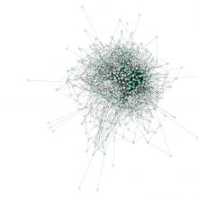
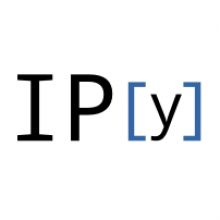

北大未名
返回外国语学院版
分享
2018-04-23 13:32:55
[楼主]1楼
 最后修改于2018-04-23 13:46:06
11楼
最后修改于2018-04-23 13:46:06
11楼
2018-04-23 13:50:31
17楼
我是岳昕同学的辅导员，我来说说昨晚的情况
我是外国语学院的辅导员王艳超。周日下午和晚上，出于对岳昕同学的关心，我通过微信、电话联系岳昕同学，一直没联系上；晚上11:27，我联系了岳昕同学的室友得知她还未回到寝室，开始有点担心岳昕同学的情况，后给岳昕同学的妈妈打了电话，跟她说联系不上岳昕同学。岳昕同学的妈妈很着急，试着联系岳昕同学，电话、微信等也都联系不上，于是她说要来学校找一下岳昕同学。岳昕同学的妈妈到学校后，我陪着她一起到寝室。因担心影响到寝室和周围寝室的同学休息，岳昕同学的妈妈就说想带岳昕同学回家。岳昕同学和妈妈一起离开学校回家。
今天上午，我和岳昕同学的妈妈也有过沟通，跟岳昕妈妈说因为很多老师、学生联系我关心岳昕同学的情况，岳昕妈妈说等岳昕同学睡醒了，看看让她跟大家说一下。目前，岳昕同学还在家里，和妈妈在一起。
2018.4.23
很理解岳昕说的“蒙骗家长了”
要是学校团委书记半夜十二点给我妈打电话，说“你孩子失联了，我们都联系不上，也不在宿舍，你能联系上吗”
我妈估计也会被吓得够呛 肯定很难做到冷静理智了
签名档

最后修改于2018-04-23 13:49:04
12楼
学工老师，既然出来解释了就解释清楚吧
回避重点只会越描越黑的
比如，是何种原因使辅导员会对特定某个本科生的行踪突然关心的？
这一切和岳同学之前申请的信息公开有没有关系？
至于后来岳同学说的家庭矛盾，您能解释一下当场发生了什么吗？
签名档

最后修改于2018-04-23 13:52:47
15楼
看不下去了，越描越黑，麻烦辅导员学学怎么讲故事好吗？
学生晚归很正常吧，家长如果能来的这么快估计就是北京的，北京家长见多识广，就一个晚归把家长吓成这样？当学生傻子？听说学校对这个事情的定性，有校内外勾结的，有组织的攻击学校的行为，你们是不是吓唬家长学生犯了什么不可饶恕的错误？
人在做，天在看，有些事情迟早要还的。为了一己私利，搞破坏家庭和睦的勾当，你们不心痛么？
签名档
之前你们不是放话说岳同学在来学校的路上了不存在不能出家门的情况？
岳同学上午的时候还通过其他同学发布了求救信息以及公开信（已404），所以都是梦游出来的？
编谎也得编圆，贵院集体开会讨论如何应对咬人的兔子，出来的公告就这水平？